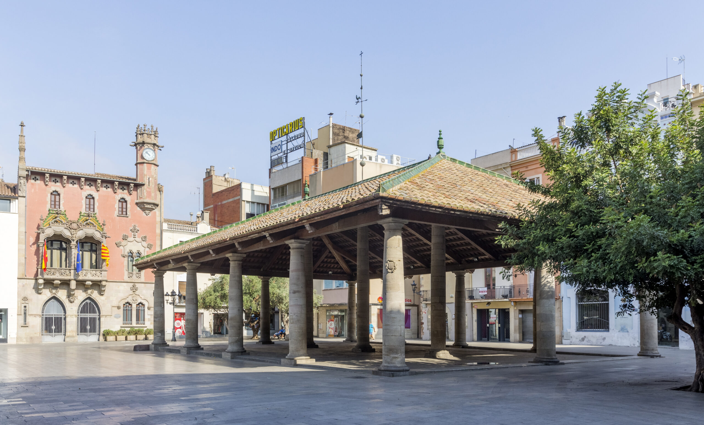
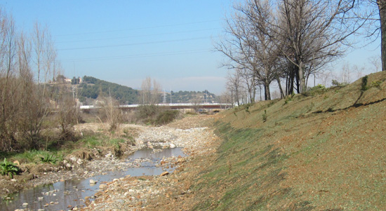
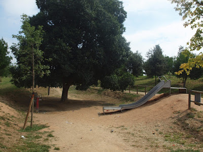
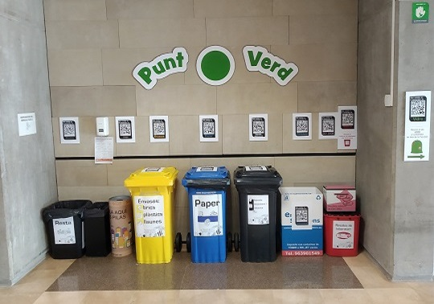
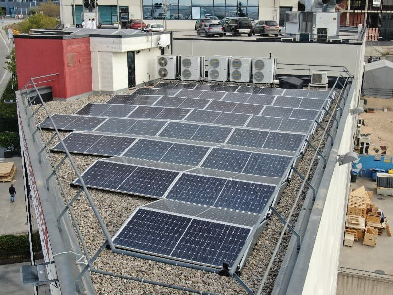
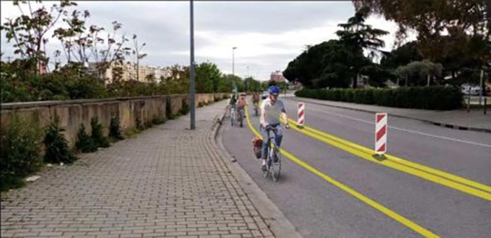

Galería de imagenes

Aquí trobaràs imatges relacionades amb el medi ambient i la sostenibilitat a Granollers.

La Porxada, símbol històric de Granollers.

El riu Congost, espai de projectes de renaturalització.

Parcs urbans que fomenten la biodiversitat.

Punts de reciclatge millorats en diversos barris.

Instal·lació de plaques solars en edificis municipals.

Carrils bici per fomentar la mobilitat sostenible.